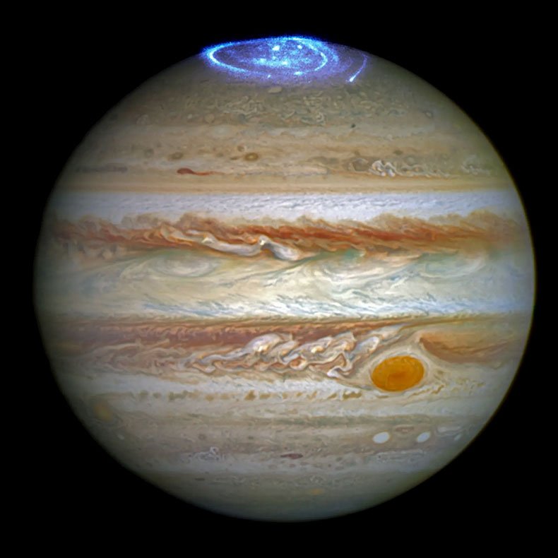

|  |
Jupiter es el planeta mas grande del sistema solar y el quinto en distancia al Sol. Es un gigante gaseoso conocido por sus brutales tormentas y su gran cantidad de lunas, incluyendo las cuatro lunas galileanas: Io, Europa, Ganimedes y Calisto. Jupiter tiene un sistema de anillos tenue y es visible a simple vista desde la Tierra. Se formo hace aproximadamente 4.5 mil millones de anos y su atmosfera esta compuesta principalmente de hidrogeno y helio. |